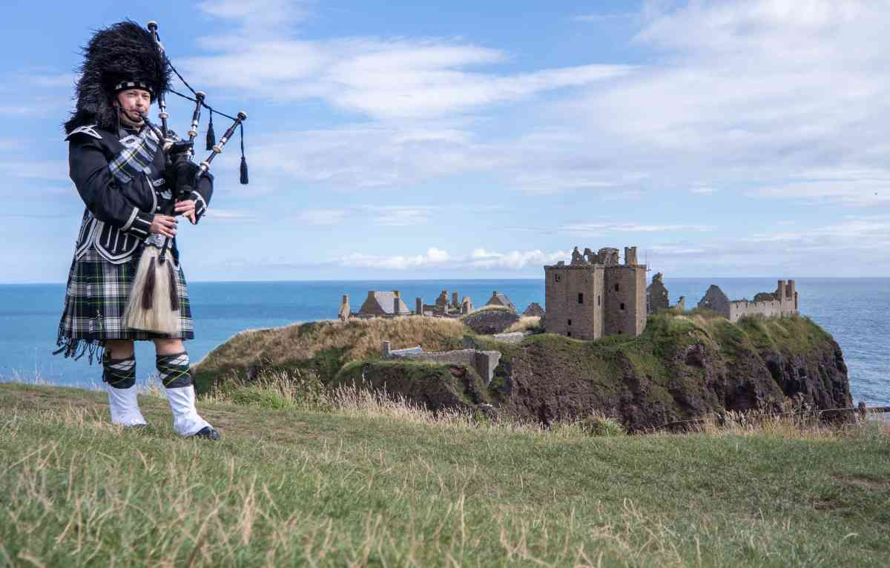

Bienvenue en Écosse
Votre aventure écossaise commence maintenant. Plongez dans une terre imprégnée d'histoire et de légendes, explorez nos paysages spectaculaires et découvrez nos racines celtiques anciennes. D'immenses lochs, vallées et montagnes - facilement accessibles depuis nos villes animées - font de l'Écosse l'endroit parfait pour se perdre.
Des vagues déferlantes sur nos côtes sauvages à la musique traditionnelle jouée en direct dans nos pubs locaux, échappez au quotidien et vivez un véritable accueil écossais.
Fàilte gu Alba !
Découvrir l'Écosse

À voir & à faire en Écosse
Découvrez une multitude d'activités et de lieux à explorer en Écosse.
Plongez au cœur de la culture écossaise
L'Écosse ouvre les portes d'un monde riche en traditions ancestrales, musique captivante et paysages légendaires. Découvrez les symboles emblématiques de son identité : le kilt, la cornemuse, la langue gaélique, les contes et bien plus encore.
Rejoignez notre newsletter
Recevez de l'inspiration écossaise directement dans votre boîte mail. Ne manquez pas les conseils de nos experts sur les idées de voyages, les attractions uniques et les trésors cachés adorés des locaux.